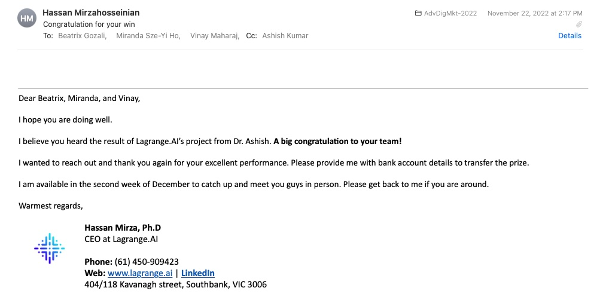

12 Testimonials
Industry project in courses, an outcome of academia-industry collaboration, has been received very well by students and clients. Testimonials from students and clients reveal that industry projects have brought mutual benefits.
Students benefit from hands-on learning experience. Thus, they gain valuable skills in managing and solving real business problems while in the university that tremendously adds value to their job market opportunities.
At the same time, industry partners benefit from unique insights into their business operations from our students. Reports, presentations, and interactions help clients in discussing their business problems in more relaxed atmosphere where many business constraints are relaxed, which ultimately provides them with unique insights and strategies.
12.1 What Students Said?
Unique Learning Experience via Industry Project
“I love how Ashish always explain things clearly in class. And he’s very excited when he’s teaching, which motivates me to learn. And getting to work with real industry partner makes me kind of picture what it’s like working in real life.”
“Working with a real-world client was fascinating and a great experience. I really enjoyed taking a very specific approach to marketing in the digital context and I think assignments 1, 2 and 3 were very interesting. I think Ashish is a fantastic teacher and puts effort into instilling key learnings and knowledge onto us.”
Enhancing Learning Skills required for Jobs
“I get to expand skills using excel and knowledge in marketing analytics. Teacher really engaging during class.”
“The opportunity to have work integrated learning and to be able to work with an industry client, applying our knowledge to real life examples. The resources and notes available for each module were also helpful.”
“THe final project is directly relevant to many entry level marketing roles in industry, so there is strong potential here. It is the best aspect of this course. Numerical assignments are well explained via the online videos, these are also very good assessment pieces.”
Improving Communication Skills
“Good practice to communicate with company from the assignments. Online group work is a challenge, but it is interesting to give me online working experiences.”
“I’m happy to have this course in this semester, though I can not get a good grade on my assignment, I felt very useful and understand the problem I had after having a consultant with Ashish, he is very nice and be willing to answer our question. Thanks a lot!”
Exposure to Data
“The final assessment with an external client was really helpful in understand real life data and how to analyse and provide insights. The actual content of the course was quite good, although some areas felt like they were skimming the surface, i believe that may be because the amount of content being covered made it hard to deep dive.”
Entrepreneurial Skills
“we get to work with real world business model and interact with real entrupreneur. helps gain insight about the industry and motivate to work hard. the”
“working with a company is a good idea, and allows us to see the bigger picture”
Some Setbacks
“The individual assignments. Working with an industry partner had real potential. Unfortunatley, my group was completely incompetent and I was unable to get the full potential. The videos of how to do the assingments were hopeful, but my group members still did not understand.”
12.2 What Clients Said?
Learning from Students
Please Take my Money

Amazing Experience
Internship Opportunity
Long-term Partnership